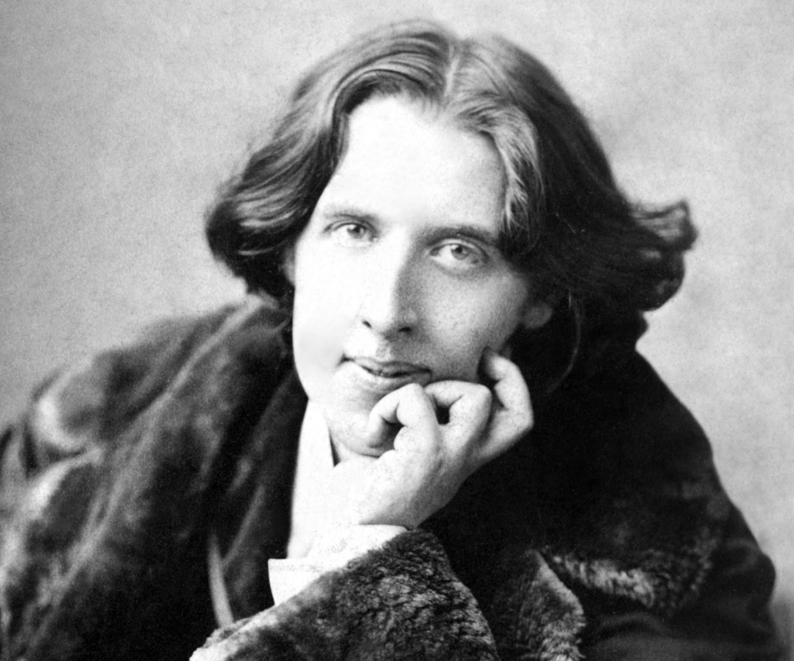

About the book
The Picture of Dorian Gray is a Gothic and philosophical novel by Oscar Wilde, first published complete in the July 1890 issue of Lippincott's Monthly Magazine. Fearing the story was indecent, the magazine's editor deleted roughly five hundred words before publication without Wilde's knowledge. Despite that censorship, The Picture of Dorian Gray offended the moral sensibilities of British book reviewers, some of whom said that Oscar Wilde merited prosecution for violating the laws guarding public morality. In response, Wilde aggressively defended his novel and art in correspondence with the British press, although he personally made excisions of some of the most controversial material when revising and lengthening the story for book publication the following year. The longer and revised version of The Picture of Dorian Gray published in book form in 1891 featured an aphoristic preface—a defence of the artist's rights and of art for art's sake—based in part on his press defences of the novel the previous year. The content, style, and presentation of the preface made it famous in its own right, as a literary and artistic manifesto. In April 1891, the publishing firm of Ward, Lock and Company, who had distributed the shorter, more inflammatory, magazine version in England the previous year, published the revised version of The Picture of Dorian Gray. The only novel written by Wilde, The Picture of Dorian Gray exists in several versions: the 1890 magazine edition (in 13 chapters), with important material deleted before publication by the magazine's editor, J. M. Stoddart; the "uncensored" version submitted to Lippincott's Monthly Magazine for publication (also in 13 chapters), with all of Wilde's original material intact, first published in 2011 by Harvard University Press; and the 1891 book edition (in 20 chapters). As literature of the 19th century, The Picture of Dorian Gray "pivots on a gothic plot device" with strong themes interpreted from Faust.
The Picture of Dorian Gray was written by Oscar Wilde
The characters of the story are:
a handsome, narcissistic young man enthralled by Lord Henry's "new" hedonism. He indulges in every pleasure and virtually every 'sin', studying its effect upon him, which eventually leads to his death.
a deeply moral man, the painter of the portrait, and infatuated with Dorian, whose patronage realises his potential as an artist. The picture of Dorian Gray is Basil's masterpiece.
an imperious aristocrat and a decadent dandy who espouses a philosophy of self-indulgent hedonism. Initially Basil's friend, he neglects him for Dorian's beauty. The character of witty Lord Harry is a critique of Victorian culture at the Fin de siècle – of Britain at the end of the 19th century. Lord Harry's libertine world view corrupts Dorian, who then successfully emulates him. To the aristocrat Harry, the observant artist Basil says, "You never say a moral thing, and you never do a wrong thing." Lord Henry takes pleasure in impressing, influencing, and even misleading his acquaintances (to which purpose he bends his considerable wit and eloquence) but appears not to observe his own hedonistic advice, preferring to study himself with scientific detachment. His distinguishing feature is total indifference to the consequences of his actions. Scholars generally accept the character is partly inspired by Wilde's friend Lord Ronald Gower.
a talented actress and singer, she is a beautiful girl from a poor family with whom Dorian falls in love. Her love for Dorian ruins her acting ability, because she no longer finds pleasure in portraying fictional love as she is now experiencing real love in her life. She kills herself on learning that Dorian no longer loves her; at that, Lord Henry likens her to Ophelia, in Hamlet.
Sibyl's brother, a sailor who leaves for Australia. He is very protective of his sister, especially as their mother cares only for Dorian's money. Believing that Dorian means to harm Sibyl, James hesitates to leave, and promises vengeance upon Dorian if any harm befalls her. After Sibyl's suicide, James becomes obsessed with killing Dorian, and stalks him, but a hunter accidentally kills James. The brother's pursuit of vengeance upon the lover (Dorian Gray), for the death of the sister (Sibyl) parallels that of Laertes vengeance against Prince Hamlet.
chemist and one-time friend of Dorian who ended their friendship when Dorian's libertine reputation devalued such a friendship. Dorian blackmails Alan into destroying the body of the murdered Basil Hallward; Campbell later shoots himself dead.
A youthful friend of Dorian's, whom he evidently introduced to opium addiction, which induced him to forge a cheque and made him a total outcast from his family and social set.
Lord Henry's wife, whom he treats disdainfully; she later divorces him.
Some quotes from the book
“You will always be fond of me. I represent to you all the sins you never had the courage to commit.”
“Experience is merely the name men gave to their mistakes.”
“To define is to limit.”
“I don't want to be at the mercy of my emotions. I want to use them, to enjoy them, and to dominate them.”
“There is only one thing in the world worse than being talked about, and that is not being talked about.”
“Men marry because they are tired; women, because they are curious: both are disappointed.”